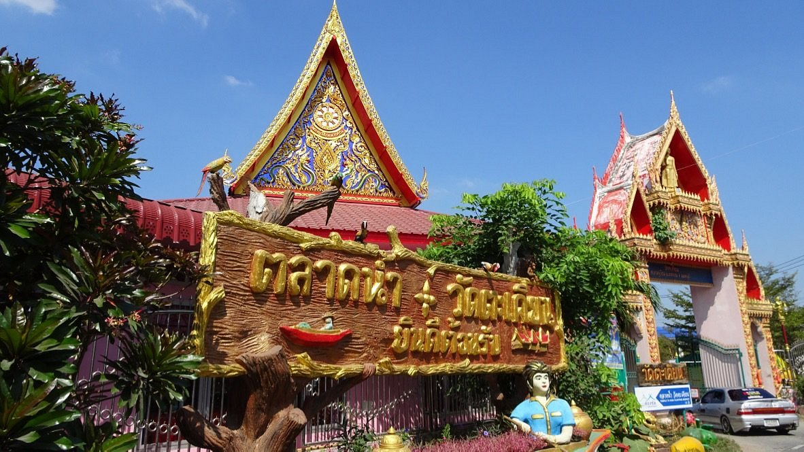
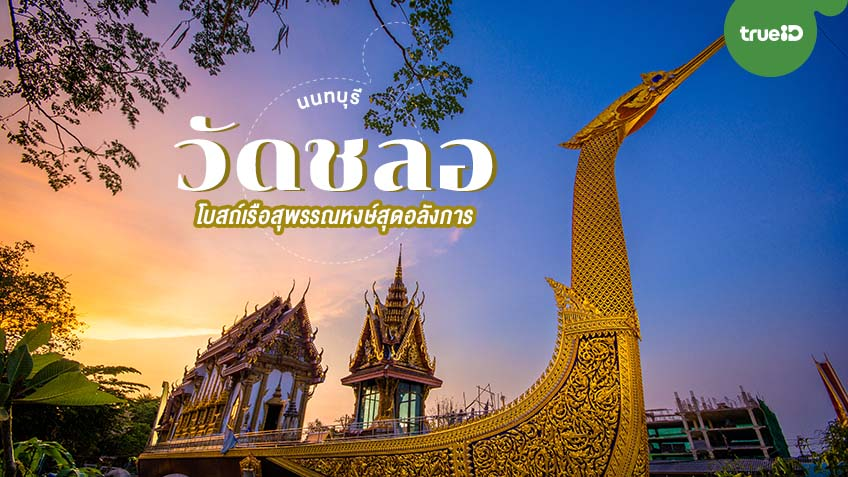

ยินดีต้อนรับสู่เว็บไซต์สถานที่เที่ยวในเมืองนนทบุรี
ในเว็บไซต์นี้คุณจะได้พบกับข้อมูลเกี่ยวกับสถานที่ ทำบุญวัด
สถานที่ท่องเที่ยวแนะนำ
1.วัดตะเคียน(จังหวัดนนทบุรี)

- วัดตะเคียน: วัดเก่าแก่ที่มีสถาปัตยกรรมสวยงามและประวัติศาสตร์ที่น่าสนใจ
- วัดตะเคียน หลวงปู่แย้มเป็นพระเกจิอาจารย์ที่เชี่ยวชาญวิชาแพทย์แผนโบราณและยันต์ต่างๆ มีชื่อเสียงจากการสร้างวัตถุมงคล เช่น ตะกรุดคอหมา และยันต์ต่างๆ
- วัดตะเคียนร่างของหลวงปู่แย้มยังคงสภาพดีและประดิษฐานอยู่ภายในวัด
- วัดตะเคียนเป็นวัดที่ได้รับความศรัทธาจากประชาชน
2.วัดชลอ(จังหวัดนนทบุรี)

- วัดชลอ: อุโบสถเรือสุพรรณหงส์ อันเป็นสัญลักษณ์ที่โดดเด่นและใหญ่ที่สุดในโลก ผสมผสานกับ ความเป็นวัดเก่าแก่ ตั้งแต่สมัยอยุธยา และเป็นที่ประดิษฐานสิ่งศักดิ์สิทธิ์ต่างๆ ที่ผู้คนนิยมมา สักการะขอพร รวมถึง บรรยากาศริมคลองบางกอกน้อยที่เงียบสงบ
- วัดชลอ ภายในวัดมีท้าวเวสสุวรรณ, เจดีย์ไอ้ไข่, พระพรหม, จตุคามรามเทพ และพระพุทธรูปโบราณ ทำให้เป็นสถานที่ศักดิ์สิทธิ์ที่ผู้คนมากราบไหว้ขอพร
ข้อมูลเพิ่มเติม
สำหรับข้อมูลเพิ่มเติมเกี่ยวกับสถานที่ท่องเที่ยวในนนทบุรี คุณสามารถติดต่อสำนักงานการท่องเที่ยวจังหวัดนนทบุรี หรือเยี่ยมชมเว็บไซต์ทางการของจังหวัดนนทบุรีได้